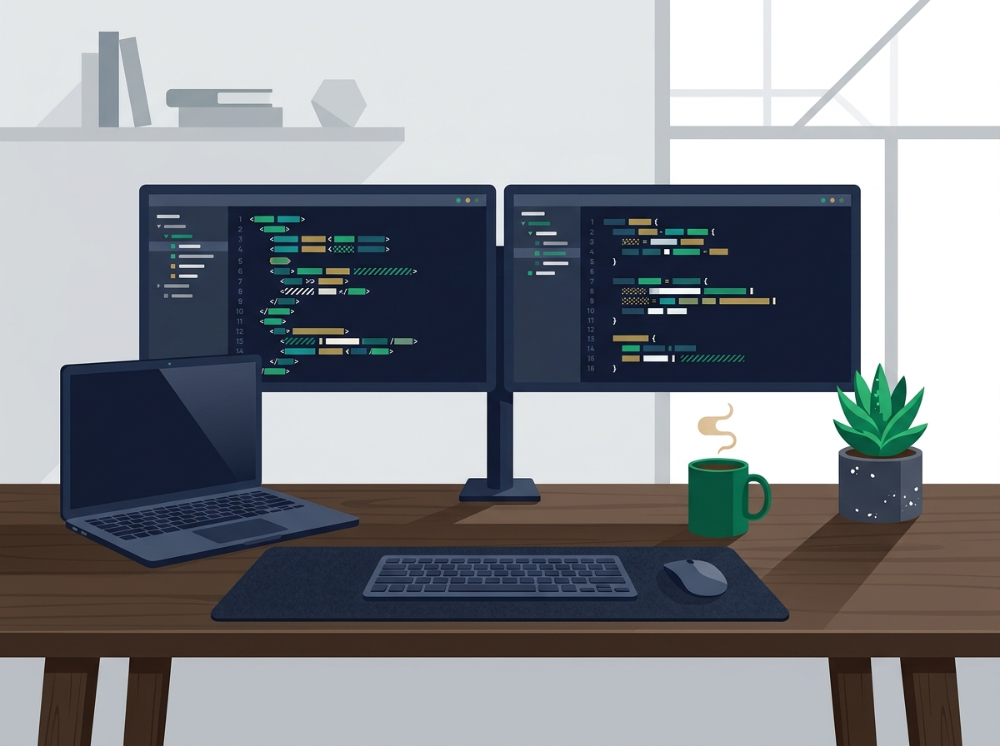

Frontend
- HTML5 & CSS3
- TailwindCSS & Sass
- JavaScript & TypeScript
- ReactJs & NextJs
- Shadcn/ui & Zod
Recife, Pernambuco • Brasil
Desenvolvedor de Software FullStack
Desenvolvedor de Software FullStack em busca da minha primeira oportunidade na área. Estou comprometido em aprender, crescer, contribuir com projetos reais e aberto a oportunidades que me permitam aplicar meus conhecimentos para evoluir como profissional junto à empresa.
